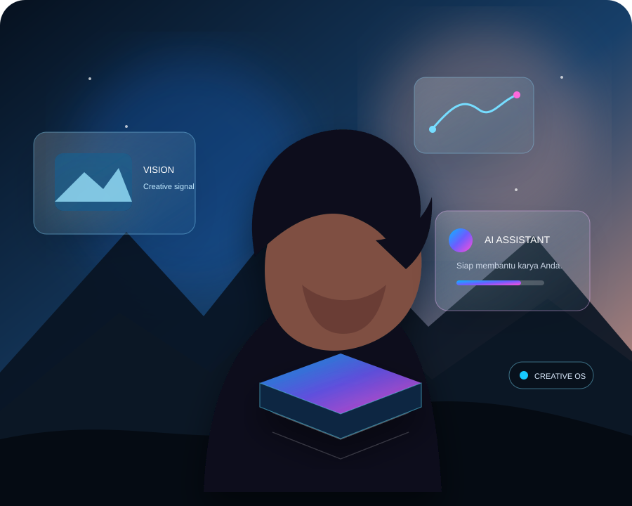

Identity
Satu identitas digital dan Creative Passport untuk menghubungkan perjalanan Anda.
CREATIVE & LEARNING OPERATING SYSTEM
Satu ekosistem untuk membangun kemampuan, mengelola karya, memperkuat portofolio, menemukan peluang, dan berkembang bersama AI.

ARSITEKTUR PLATFORM
SANGGAR menyatukan identitas, data, alur kerja, kecerdasan, dan akses ekonomi dalam satu platform yang terukur.
Satu identitas digital dan Creative Passport untuk menghubungkan perjalanan Anda.
Data karya, skill, evidence, portofolio, dan aktivitas yang terkelola dengan aman.
Proses kerja yang terstruktur dari proyek hingga peluang dan pengajuan.
AI untuk analisis, rekomendasi, pencocokan, dan dukungan keputusan.
Membuka akses ke marketplace, klien, proyek, monetisasi, dan pertumbuhan.
Evidence, provenance, audit trail, kebijakan, dan human approval untuk risiko tinggi.
DOMAIN UTAMA
Dari ruang belajar hingga karya yang siap ditemukan, dinilai, dan dihubungkan dengan peluang.
Bangun kemampuan melalui learning path, praktik, proyek, dan evidence.
Jelajahi Academy →Tampilkan karya, portofolio, dan kemampuan dalam satu ruang profesional.
Lihat Gallery →Hubungkan tujuan, skill, karya, evidence, peluang, dan outcome.
Mulai Journey →Kelola karya, portofolio, passport, assessment, dan paket pengajuan.
Buka Workspace →DIBANGUN UNTUK BERTUMBUH
SANGGAR dirancang agar kemampuan tidak berhenti sebagai pembelajaran, tetapi dapat menjadi bukti, karya, peluang, dan pertumbuhan yang terukur.
Jelajahi Creator Journey →AI-NATIVE · HUMAN-GOVERNED
SANGGAR menggunakan multi-agent orchestration, context & memory, knowledge graph, policy engine, evaluation, reliability, dan autonomous evolution—dengan batas kewenangan yang jelas.
SANGGAR CREATIVE OS
Mulai dari kemampuan dan karya Anda. Biarkan SANGGAR membantu menghubungkannya dengan peluang berikutnya.